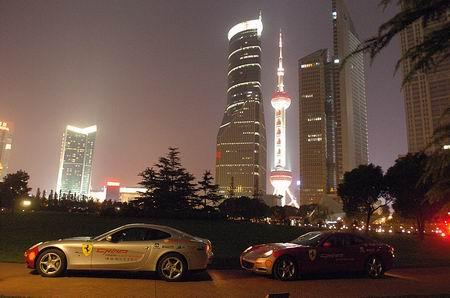

网络，绝对不是什么穷人聚集的地方，真的穷人，根本就没钱上网，而现在中国一亿多上网的人中，绝大多数都不过是所谓的小资，还有一些酸馊文人，网络上的大众意见，只不过是反映了这些小资和文人的酸馊意见。如果套用以前的所谓阶级分析，现在的网络，只不过是小资产阶级和被收买的工人阶级贵族的垃圾场。
在网络上，除了反对房价上涨，反对国内油价上涨的声音是最大的。为什么？很简单，就是现在国内油价上涨最触及的利益阶层刚好一致于现在网上的所谓主流，这一群小资产阶级和被收买的工人阶级贵族的垃圾。如今的媒体、文化圈都被这群腐朽无能的中国小资产阶级和被收买的工人阶级贵族垃圾所把持，这也是目前文化领域垃圾化的阶级根源。
这群人的特点就是爱慕虚荣，口是心非，一边在虚拟的空间中大骂市场经济，一边在现实中为了一些市场经济的蝇头小利而到处逢迎。明明经济实力不行，就要贷款买房子，还要贷款买车，中国的所谓中产阶级是全世界最无耻、腐朽的一群。就以车为例子，欧洲的中产阶级早就以买小排量为潮流，而中国经济实力远远不及欧洲的中产阶级们，打肿了脸去以大为荣，恨不得人人都开888缸的才有面子，油都买不起还充胖子？破产了都活该！
在世界经济全球化的大背景下，资源价格的全球化是不可逆转的趋势，现在的房价、油价的上涨正是这种趋势的基本反应，完全是合理的。有多大头就戴多大的帽子，喜欢戴大帽充大头的中国中产阶级在这种趋势下，将彻底暴露他们无能、无耻的本质。只有把这群小资产阶级和被收买的工人阶级贵族垃圾打得稀巴烂，中华文明的最终复兴才有真正的希望！